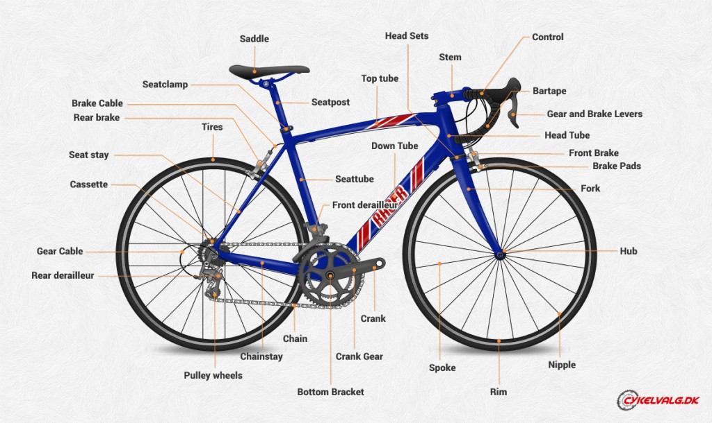

Talk: Bike Components for Beginners
A new bike or accessories can often be bewildering to the novice; the folks working in the shop almost seem to be speaking a different language. It's almost as bad as trying to pick out a personal computer!
From our perspective, sometimes it's hard to tell when we're using everyday language and when we're slipping into technical jargon. We have to really ask questions to make sure we're on the same page with a customer and really understand what they are looking for, and often it's just a matter of making sure we agree on the meaning of the words we are using. For example, we sometimes get people asking for a "wheel," when all they really need is a new tire. On the other hand, we've gotten really perplexed looks when we've handed somebody a "rim," when they were really looking for an entire wheel.
So, breaking down the language barrier is an important step in productive relationships between bike shop customers and bike shop employees. To that end, here is a glossary providing a breakdown of the anatomy of the bicycle.
Scroll down to the bottom of this page for a video overview of most major bike parts.
Bar ends - the angled extensions attached to the ends of some flat handlebars and riser handlebars that provide an alternate place to rest your hands.
Bracket - the collection of ball bearings and spindle housed within the bottom bracket shell of the frame, which provides the "shaft" mechanism on which the crank arms turn.
Braze-ons - threaded sockets that may or may not be present on the bike frame that provide a place to attach accessories such as bottle cages, cargo racks, and fenders.
Cage - the preferred fancy name for water bottle holder.
Cassette - the collection of gears that is attached to the rear wheel on most modern bicycles (see "Freewheel").
Chainrings - the gears that are attached to the right-hand crank arm nearer to the front of the bike. A bike with two chainrings is said to have a "double crank;" a bike with three chainrings is said to have a "triple crank."
Cog - a single gear on a cassette or freewheel gear cluster, or the single rear gear on a fixed-gear bike.
Crank arms - the pedals screw into these; these bolt onto the bottom bracket spindle.
Cyclocomputer - the preferred fancy word for an electronic speedometer/odometer.
Derailer - the device that is bolted to the frame that handles the job of moving the chain from one gear to another when you shift gears. The front derailer handles the shifting on your chainrings and is usually controlled by your left-hand shifter. The rear derailer handles the shifting on your cassette or freewheel, and is usually controlled by your right-hand shifter.
Derailer hanger - a part of the frame where the rear derailleur is attached. It is usually an integrated part of the frame on steel and titanium bikes, but is a separate, replaceable piece on aluminum and carbon fiber bikes.
rop bar - the type of handlebar found on road racing bikes, with the half-circle-shaped curved ends that extend below the top, flatter part of the bar.
Dropouts - the U-shaped notches at the rear of the bike frame, and at the bottom ends of the front fork legs, where the wheels are held in place. So-called because if you loosen the bolts holding a wheel in place, the wheel "drops out."
Fixed gear - a type of bicycle that has a single gear and does not have a freewheel or cassette/freehub mechanism, so you are unable to coast. If the wheels are moving, you have to be pedaling. "Fixie" for short.
Flat bar - a handlebar with little or no upward or downward curve; some flat bars will have a slight backward curve, or "sweep."
Fork - the two-legged part of the frame that holds the front wheel in place. The steerer tube is a part of the fork that extends up into the frame through the head tube.
Freehub body - a part of the hub on most rear wheels, it provides that coasting mechanism that transfers power to your wheel when you are pedaling forward, but allows the rear wheel to turn freely when you are pedaling backwards or not pedaling at all. The cassette is attached to the freehub body.
Freewheel - the collection of gears attached to the rear wheel found on mostly older bicycles and some lower-end modern bicycles. Both the gears and the coasting mechanism are part of the freewheel component, as opposed to cassette gears, where the gears are a solid, non-moving component, and the coasting mechanism is part of the wheel's hub.
Headset - the collection of bearings housed within the head tube of the bike frame; it provides smooth steering.
Hub - the central component of a wheel; inside the hub are the axle and ball bearings.
Nipple - A small flanged nut that holds a spoke in place on the rim of a wheel. Turning the nipples with a spoke wrench is what allows the tension in the spokes to be adjusted, in order to "true" the wheel, i.e. make sure the wheel is perfectly round.
Rim - the outer "hoop" part of a wheel. Usually made of aluminum, although can be made of steel on some older or low-end bikes, or made of carbon fiber on some high-end racing bikes.
Rim strip or Rim tape - a layer of material, usually cloth, plastic, or rubber, that is installed around the outside of a rim (between the rim and inner tube), to prevent the ends of the spokes from puncturing the inner tube.
Riser bar - a type of handlebar with a "U" shape in the middle. Some riser bars have a very shallow "U" shape, like on some mountain bikes and most hybrid bikes, but some have a very deep "U" shape, like on some retro-style cruiser bikes.
Saddle - the preferred fancy word for "seat."
Seatpost - the rod that connects the saddle to the frame.
Seatpost clamp - the collar located at the top of the seat tube on the frame, which holds the seatpost at the desired height. Some seatpost clamps have a quick-release lever that allows for easy, tool-free adjustment, while others require a tool to tighten or loosen the clamp.
Stem - the part that connects the handlebar to the frame. Do not call this the "gooseneck," unless you want to make it perfectly clear that you are a clueless newbie. Stems come in two varieties, threadless--which clamps to the outside of the fork's steerer tube, and threaded, which is held in place by an expanding wedge bolt inside the fork's steerer tube.
Wheel - the complete assembly of hub, spokes, nipples, and rim.
